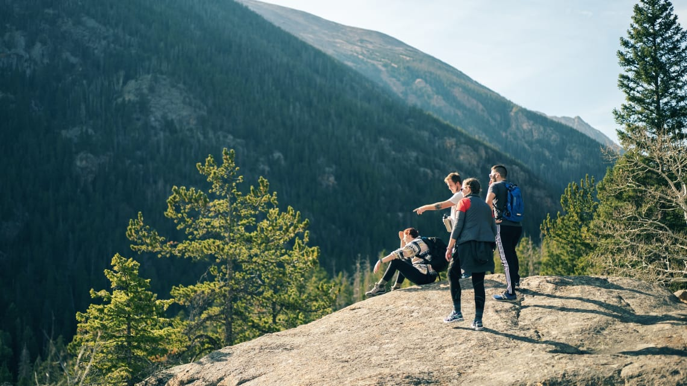
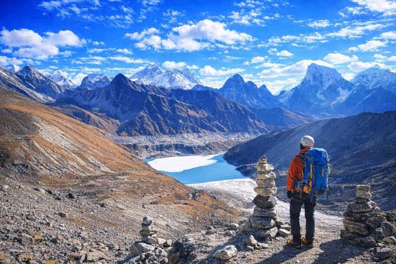

The Mountain Road
Read full transcript
Two travelers pause along the mountain road, phone held out in front of them, framing a quick selfie with the peaks behind. After a few tries and a shared laugh, they turn the camera outward instead — capturing the mountain itself, sunlight catching the ridgeline. The wind picks up slightly, carrying the quiet of the high pass around them.
Related stories


Into the Trees
A short visual story following a hiking trail through dense forest.
Watch the story →